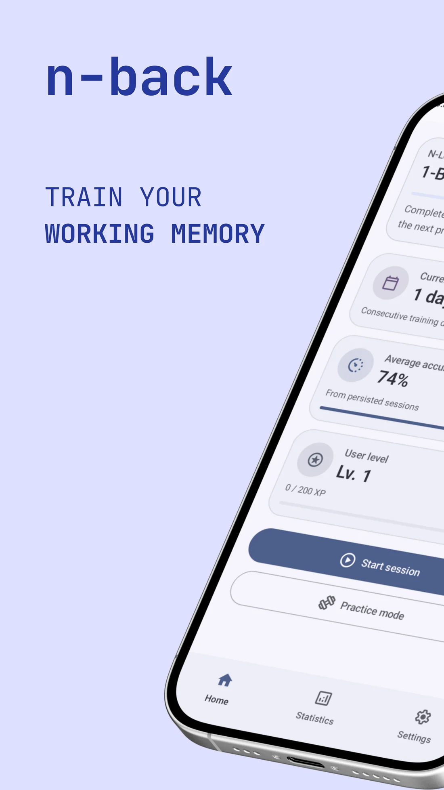
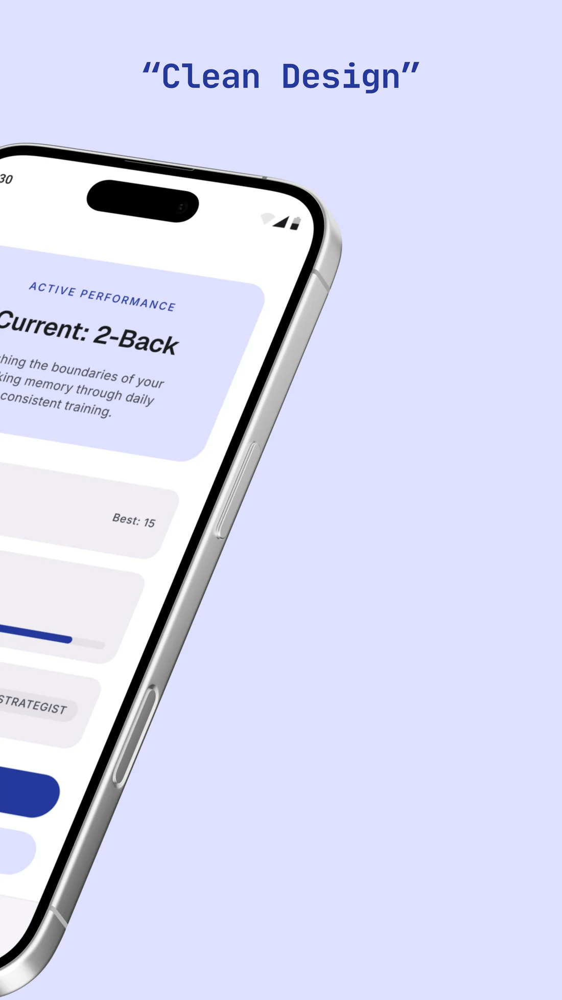
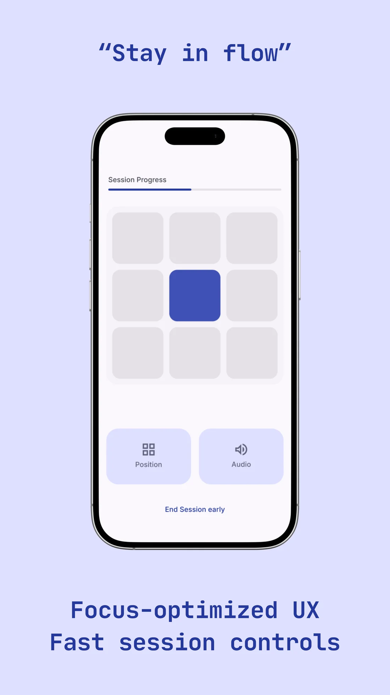
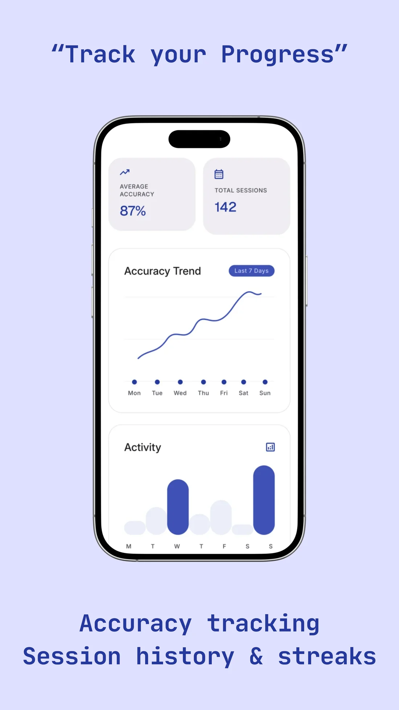
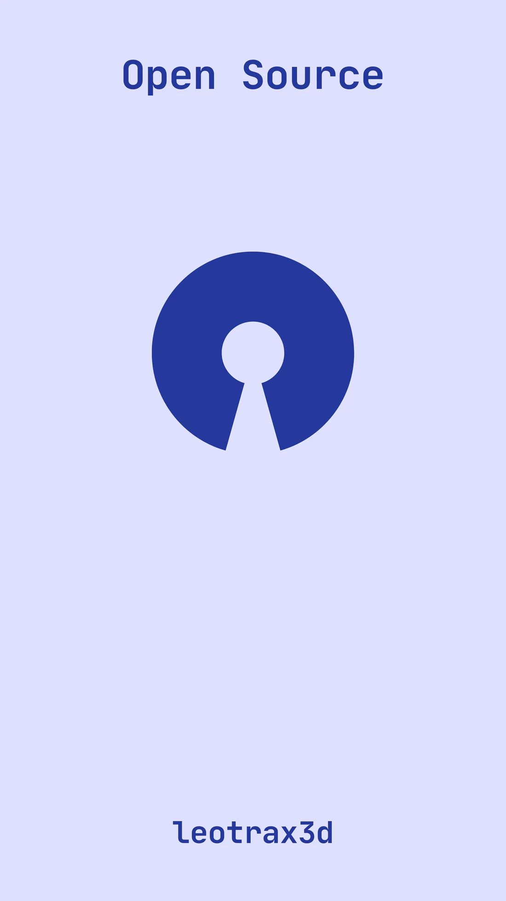

A minimalist dual n-back trainer for your phone — the working-memory workout backed by cognitive science, wrapped in a clean, distraction-free, open-source app.

Dual n-back is a working-memory exercise first described by Kirchner in 1958 and turned into its modern "dual" form by Jaeggi & colleagues in 2003. You watch two streams at once and have to remember what happened N steps ago in each.
A square lights up somewhere on a 3×3 grid each round. You track where it appeared.
At the same moment a letter is spoken. You track which letter you heard, independently of the square.
Flag a match whenever the current position — or the current letter — is the same as it was N rounds ago. Two memories, updated every beat.




Start at 1-back and climb as your accuracy holds. The app tracks your current level so the difficulty grows with you.
Average accuracy, total sessions, a 7-day accuracy trend and an activity chart — see your working memory improve over time.
Consecutive training days, a user level and XP keep daily practice rewarding without turning into a slot machine.
A calm session view with quick Position / Audio controls, a live progress bar and an easy "end session early" — built to keep you in flow.
A no-pressure mode to warm up or learn the mechanics before a scored session counts toward your stats.
No ads, no tracking, no accounts. The whole thing is free and open source — inspect it, build it, make it yours.
A few minutes a day. Two streams, one focused mind. n-back is open source and built in the open — grab the code, file an issue, or just give your brain a workout.